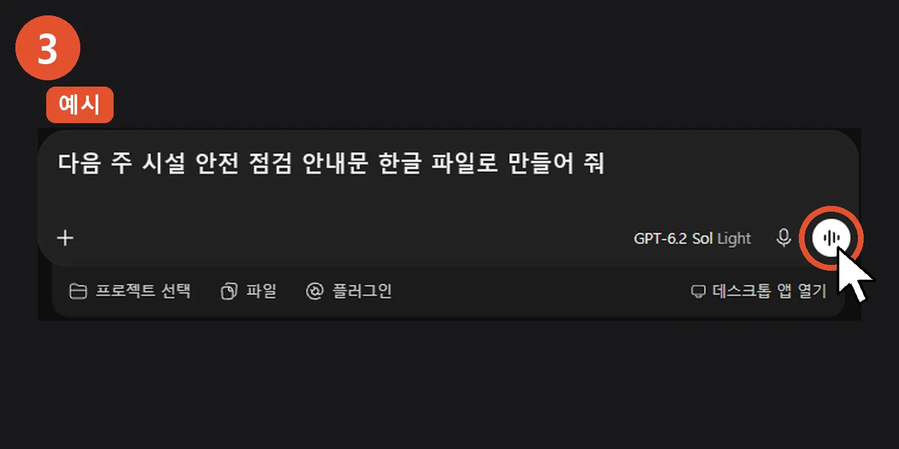

AI에게 무기를 주면
ChatGPT·Claude에 도구·레시피 챙겨 주기 → 직접 설치해 나란히 비교
약 10MB · 와이파이에서 한 번 열면 다음부터 인터넷 없이
이 페이지에서 할 수 있는 것
- 슬라이드 열기 2회차 발표자료
- 시작 가이드 ChatGPT · Claude 쓰는 법 · 아이모두와 다른 점
- 하네스란? 한 줄 뜻 · 유래 · 김치볶음밥 이야기
- 부탁 복사 오늘 쓴 부탁 8개 · 꿀팁 3줄 · 막히면
집에서 · 학교에서 이어서 해 보기
오늘 연수처럼, 내 컴퓨터에서 다시 해 보는 ChatGPT · Claude 시작 가이드
2026년 11월 기준 · 자주 바뀌어요 · 메뉴 이름은 앱·요금제마다 달라요
ChatGPT로 시작하기 오늘 연수에서 쓴 방법
- 컴퓨터용 ChatGPT 앱 설치 · 로그인휴대폰·웹 말고 컴퓨터용 앱으로 해요.
- 위쪽 「Chat | Work」에서 「Work」 누르기Work = AI가 파일을 직접 만들어 주는 작업 모드

그림 1 · 「Work」 누르기 - 입력창 아래에서 모델(AI) 고르기모르면 기본값 그대로 두면 돼요.
- 한 줄로 부탁 + 「파일」로 양식 붙이기우리 학교 양식 파일을 붙이고, 평소 말하듯 한 줄로 부탁해요.

그림 2 · 「파일」로 양식 붙이기 
그림 3 · 한 줄 부탁 쓰고 보내기 - 나온 파일 열어 확인 · 「여기 고쳐 줘」마음에 안 드는 곳은 한마디로 다시 부탁해요.

그림 4 · 나온 한글 파일 확인 (가상 내용)
요금 무료로도 들어가 볼 수 있지만, 많이 쓰려면 유료예요. 공식 안내 기준(2026년 11월): 컴퓨터용 앱의 Work는 모든 요금제, 웹·휴대폰의 Work는 유료 요금제.
Claude로 시작하기
- 컴퓨터용 Claude 앱 설치 · 로그인
- 입력창 아래에서 모델 고르기모르면 기본값 그대로 두면 돼요.
- 파일을 직접 만들고 고치는 작업 모드(Cowork)는 유료 요금제부터무료라면 일반 채팅으로 먼저 해 보세요.
메뉴 이름은 앱·요금제마다 달라요. 안 보이면 비슷한 이름을 찾아보세요.
잘 쓰는 요령 · 노안중 레시피
- 양식 파일 한 장우리 학교 양식을 「파일」로 같이 붙이기
- 잘된 예시 하나마음에 들었던 지난 문서 하나를 같이 주기
- 규칙 한 줄「학생 이름 · 연락처는 넣지 마」
- 물어볼 땐 채팅, 맡길 땐 Work궁금한 건 채팅으로, 파일을 만들 땐 작업 모드로
아이모두와 무엇이 다른가요?
2026년 11월 기준 · 자주 바뀌어요
| 살펴볼 점 | 아이모두 | ChatGPT · Claude |
|---|---|---|
| 누가 만들고 운영하나 | 교육청의 AI 교수학습 플랫폼 (ai.jne.kr) | AI 회사가 만든 앱 · 내가 직접 설치 |
| 비용 | 학교에서 받은 계정으로 써요 · 미리캔버스는 아이모두를 거쳐 들어가면 교육용 Pro | 무료로 들어가 볼 수 있어요 · 많이 쓰려면 유료 |
| 계정 | 학교에서 받은 아이모두 계정 · 처음 한 번 간편인증·공동인증서 둘 다 등록 | 내 계정으로 컴퓨터용 앱에 로그인 |
| 학생과 함께 써도 되나 | 학생 등록 가능 · 보호자 동의서(PDF)를 붙여야 등록돼요 · 구글 클래스룸 연결 | 이 가이드는 선생님 업무용이에요 (학생과 쓰기는 다루지 않아요) |
| 개인정보 | 개인정보 든 문서는 올리지 않아요 · 이름·연락처·성적은 지우고 | 넣지 않아요 · 부탁에 「학생 이름 · 연락처는 넣지 마」 한 줄 |
| 잘하는 일 | 로그인 한 번으로 교육청 도구 46개 · JneGPT(가정통신문·회의록 글) · Gemini·Notebook(긴 공문 정리) · 미리캔버스 · 구글 클래스룸 | 양식을 붙여 한 줄로 부탁 → 파일로 받기 · 「여기 고쳐 줘」로 다듬기 |
| 파일을 직접 만들어 주나 (작업 모드) | 오늘 같은 작업 모드(파일 직접 만들기)는 아이모두에서는 안 돼요. 나온 글은 초안 → 내가 문서에 옮겨요 | 돼요 · ChatGPT Work(컴퓨터용 앱은 모든 요금제) · Claude Cowork(유료 요금제부터) |
| 언제 쓰면 좋나 | 학생과 함께 · 학교 안에서 · 교육청 도구를 열 때 | 내 업무 파일(안내문·발표자료 등)을 맡길 때 |
학생과 함께 · 학교 안에서는 아이모두, 내 업무 파일을 맡길 땐 ChatGPT·Claude의 작업 모드 — 단, 개인정보는 어디에도 넣지 않아요
아이모두 칸은 이 사이트의 아이모두 완전 정복과 카드 08b(학생과 쓰기 전에)에 적힌 내용만 옮겼어요.
⚠ 꼭 지켜 주세요
- 개인정보 넣지 않기 학생 이름 · 연락처 · 성적은 지우고
- 남의 사진 · 음악 · 캐릭터 쓰지 않기
- 사실 · 숫자 확인 AI가 만든 건 초안 · 마지막 책임은 우리에게
하네스란?
하네스 = AI에게 도구와 레시피를 주는 것
- 유래
- 말에 채우는 마구(하네스) → 힘센 말의 힘을 원하는 방향으로
김치볶음밥 이야기
- 그냥 AI
- 밥만 따로
- 하네스 AI
- 셰프 레시피 + 도구
- 결과
- 한 번에 완성
그냥 시키지 말고, 도구와 길을 같이
오늘 쓴 부탁 모음
「지시서 복사」 → ChatGPT·Claude 입력창에 붙여넣기
설치 한 줄
github.com/zln02/teacher-studio 내가 준 링크에 하네스 세팅해 줘
시연
나는 중학교 선생님인데 오늘 수업에 쓸 AI 코딩 도우미 만들어 줘. 나한테 물어보지 말고 네가 알아서 만들어.
예시 부탁 6가지
게임
중2 과학 '빛의 반사' 복습 퀴즈 게임 만들어 줘. TV로 띄워서 모둠 대항으로.
슬라이드
학부모 설명회 10분 발표 자료 만들어 줘. 차분하고 믿음직한 느낌으로.
가정통신문
현장체험학습 안내 가정통신문을 한글 파일로. 회신서도 붙여 줘.
수업 도구
발표 순서 뽑기 + 3분 타이머. 교실 TV에서 크게 보이게.
성적 분석
이 엑셀로 반별 평균 비교 보고서 만들어 줘. 학생 이름은 빼고.
프로그램
모둠 활동 점수판 프로그램 만들어 줘. 인터넷 없이 열리게.
부탁 예시 (그대로 써도, 내 말로 바꿔도 돼요)
한 번에 안 나오면 한마디 더: 「글자 더 크게」 · 「우리 학교 색(파랑)으로」 · 「움직임 더 부드럽게」 · 「여기 고쳐 줘」
퀴즈쇼 게임
중1 과학 '빛과 그림자' 복습 퀴즈쇼 게임 만들어 줘. TV에 띄워서 4모둠 대항, 문제 8개, 20초 타이머, 정답이면 축하 효과, 마지막에 순위 시상대. 인터넷 없이 열리는 파일 하나로.
모션 홍보
우리 학교 가을 축제 30초 홍보 화면 만들어 줘. 큰 글자가 날아들고, 단풍잎이 떨어지고, 행사 카드 3개가 차례로 나오게. 마지막 3초는 날짜와 장소.
타이포 오프닝
다음 수업 주제 '광합성'을 소개하는 10초 오프닝 화면 만들어 줘. 글자가 한 자씩 떨어지고, 핵심 단어만 색이 바뀌게.
안내 웹페이지
12월 5일 과학관 체험학습 안내 웹페이지 만들어 줘. 휴대폰에서 보기 좋게, 일정 타임라인, 준비물 체크리스트, 간단한 지도, 비 올 때 안내. 학생 이름 · 연락처는 넣지 마.
교실 도구
TV에 띄우는 수업 도우미 만들어 줘. 발표 순서 뽑기(1~28번), 4모둠 나누기, 1 · 3 · 5분 타이머를 탭으로. 이름 없이 번호만.
한글 안내문
다음 주 시설 안전 점검 교직원 안내문 한글 파일로 만들어 줘. 일정은 표로, A4 한 장.
PPT
학부모 총회 10분 발표 PPT 5장. 차분하고 믿음직하게, 장마다 그림 하나, 글은 짧게.
한글 안내문은 「파일」로 우리 학교 양식을 같이 붙이면 더 좋아요. 같은 부탁도 결과는 조금씩 달라요.
꿀팁 3줄
- 그냥 시키지 않기도구와 레시피(하네스)를 켜고 시작
- 한 번 제대로 말하기누구에게 · 어디에 · 어떤 느낌 · 어떤 재료
- 끝나면 확인사실·숫자·출처는 원문으로 · 학생 정보는 넣지 않기
막히면
링크 설치가 안 될 때 — zip으로
- github.com/zln02/teacher-studio 에서 zip 받기
- Claude 앱 Customize → Skills
- zip 파일 올리기